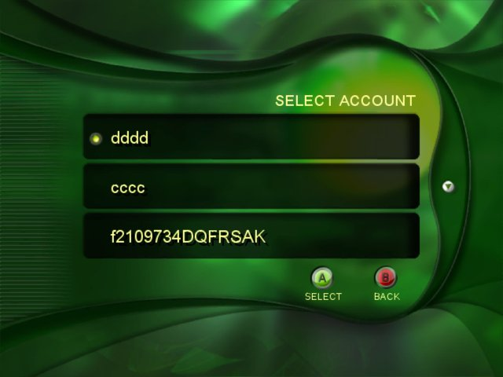

The Xbox Statistics Manager (Stats.xbe) tool is a precertified Xbox application (XBE) that provides a way for non–Xbox Live titles to store title statistics for users of the Xbox Live service.
The title uses the XWriteStatStore function to store the user's statistics locally on the hard disk. (The function does not digitally sign the statistics that it writes to the Xbox hard disk.) After storing the stats locally, the title calls Stats.xbe with XLaunchNewImage. Stats.xbe automatically updates the user's scores on the server with this local information and then deletes the local copy.
To use Stats.xbe, titles must support the idea of "identities." Scores must be reported for a specific user. Stats.xbe maps these offline identities to Xbox Live accounts. The tool logs onto the Xbox Live service using the account of the user whose statistics will be posted. Although the user is technically logged on, he or she is set to appear offline. Also, he or she does not have access to the standard Friends List functionality. Using Stats.xbe is essentially an offline experience.
Note The title provides information about its leaderboards using an INX (Xbox Initialization) file. This INX file describes the statistics stored by the title, the formulas used to compute them, and the leaderboards on which to store them.
Stats.xbe supports scores that are the "best" score for the user. For example, the tool supports scores such as fastest time to complete a level, shortest time around a race track, high score on a level, highest number of kills, and most difficult level completed.
Stats.xbe cannot store scores that contain both desirable and potentially undesirable values. For example, Stats.xbe will not support storing the average time for a particular level, nor will it store a record of wins and losses. The reason such scores are not supported is because the title cannot force the user to post every score. Because the title is played offline, the user always has the option to quit and erase the score if he or she is not doing well. For Xbox Live titles, such behavior is recorded negatively as a "drop." In an offline game, however, the title never even knows that the drop occurred. If a title attempted to write the "drop" data to the hard disk, the user could avoid posting it by deleting the game from the Dashboard before reconnecting to Xbox Live. Thus, the only scores that Stats.xbe can store are scores that a user would want to post—that is, high scores.
The Xbox Statistics Manager consists of three sets of components:
The Statistics Manager user interface consists of the following screens:

On this screen, users select the Xbox Live account to use to logon and post scores. If at any point while using Stats.xbe, users press B(ack) to go backwards repeatedly, they will pass this logon screen and from here back to the game. This behavior differs from Downloader, in which pressing B(ack) takes the user back to the game instead of the logon screen. The reason is that multiple users may need to logon consecutively, so that each can post scores.

This screen displays the scores for members of the user's Friends List. This Friends List refreshes only if the user presses B(ack) and then returns to this screen. We display this screen with the user initially positioned in the middle.

This screen displays the current user, and the 100 closest users by score—50 above and 50 below the current user. As the user scrolls this list, additional users are retrieved. As the user scrolls up and down, their own scores are always displayed at the bottom of the screen. The speed at which this screen scrolls increases as the user continues to press the directional pad. The list refreshes only if the user presses B(ack) and then returns to this screen.

This screen displays the scores from the top users and the current user's scores. Initially, the screen displays the top 10 scores and the current user's score at the bottom of the screen. As with the My Scores screen, the speed at which this screen scrolls increases as the user continues to press the directional pad.
If no button is pressed for a period of time, Stats.xbe goes into a screen saver mode. At this point, the screen is dimmed so as not to damage the television. The next button the user presses takes them out of screen saver mode, but does not perform any other action.
You can customize the art used for the Stats background and for the screen displayed while loading a demo. The art must be contained in a packed resource file named Stats.xpr, which you create by running the Bundler tool. The .rdf file that you use to generate Stats.xpr must contain the TEX_MAIN_BACKGROUND texture, which is the skin for the Stats user interface.
The .rdf file you pass to Bundler should look similar to the following example.
out_header rescustom.h
out_packedresource obj\i386\stats.xpr
out_error rescustom.err
out_prefix RESCUSTOM
Texture TEX_MAIN_BACKGROUND
{
Source srcmedia\background.bmp
Format D3DFMT_DXT3
Levels 1
}
You may also customize the sounds that Stats uses in response to user actions and events. You can skin a sound in Stats by using XACT to replace the existing Stats sound bank and wave bank with your own. (See the XACT documentation for a full explanation of how to use XACT.) To customize the Stats sounds, do the following:
| XACT Cue Name | Triggering Action |
|---|---|
| PressA | User presses the A button. |
| PressB | User presses the B button. |
| MenuItemSelect | User presses up or down on the D-pad to change the highlighted menu item. |
| NoScroll | User attempts to scroll beyond the top or bottom of the menu. |